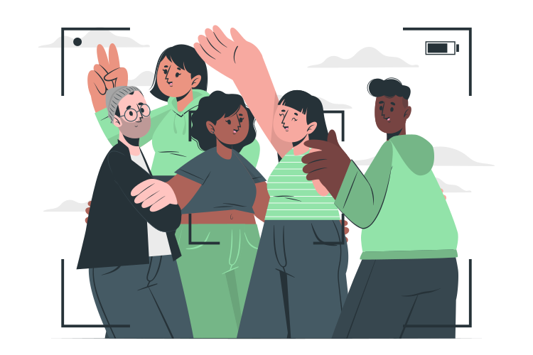

Como as Redes Sociais Influenciam as Pessoas
Nesta era digital, as redes sociais desempenham um papel significativo na vida cotidiana das pessoas. Elas conectam indivíduos ao redor do mundo, fornecendo uma plataforma para interação, compartilhamento de informações e construção de relacionamentos virtuais. Neste artigo, exploraremos o impacto das redes sociais, desde sua definição até seu impacto na sociedade.

O que são as redes sociais?
As redes sociais são plataformas digitais que permitem aos usuários criar perfis, compartilhar conteúdo e interagir com outras pessoas.
Exemplos populares de redes sociais: Facebook, Instagram, Twitter, LinkedIn, entre outros.
A importância das redes sociais
Aumento da conectividade global: As redes sociais conectam pessoas de diferentes
partes do mundo, eliminando barreiras geográficas e permitindo interações instantâneas.
Compartilhamento de informações: As redes sociais permitem que as pessoas compartilhem notícias, eventos, ideias, conhecimento e experiências pessoais com um público amplo.
Oportunidades de negócios: Empresas podem usar redes sociais para alcançar um público maior, promover produtos ou serviços e estabelecer relacionamentos com clientes em potencial.